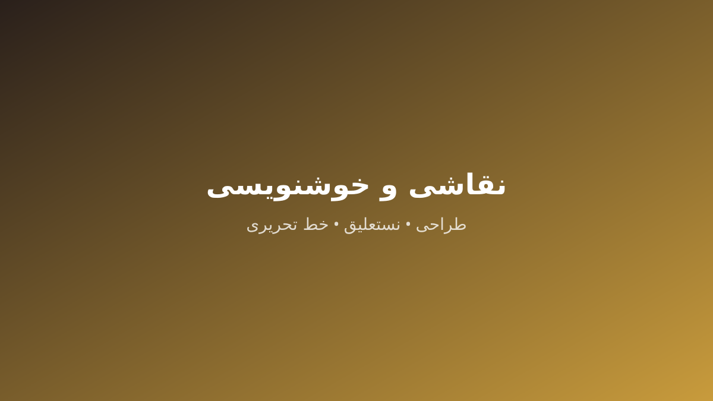

آموزش و کلاس خوشنویسی (نستعلیق، خط تحریری با خودکار و کودکان) در کرج (خصوصی، گروهی و کودکان با اساتید مجرب)
کلاس خوشنویسی (نستعلیق، خط تحریری با خودکار و کودکان) در کرج در آموزشگاه سینمایی و بازیگری آنک با اساتید مجرب خانم و آقا و بهصورت خصوصی و گروهی ویژه کودکان، نوجوانان، بزرگسالان برگزار میشود. هر ترم ۸ جلسه ۶۰ دقیقهای است و شهریه گروهی از ۳۵۰٬۰۰۰ تومان و خصوصی از ۷۰۰٬۰۰۰ تومان شروع میشود.
- حضور استاد خانم و آقا
- کلاس خصوصی و گروهی
- ویژه کودکان، نوجوانان، بزرگسالان
- مدرک معتبر انجمن خوشنویسان / آموزشگاه
- شروع شهریه گروهی ۳۵۰٬۰۰۰ تومان
آموزشگاه سینمایی و بازیگری آنک در کرج پاسخ مستقیم جستوجوهای «آموزش خوشنویسی با خودکار در کرج»، «آموزش خوشنویسی در کرج»، «آموزش خوشنویسی کرج»، «آموزشگاه خوشنویسی در کرج»، «آموزشگاه خوشنویسی کرج» است.
همه این عنوانها به یک دوره واحد و کامل میرسند: «کلاس خط کرج»، «کلاس خطاطی در کرج»، «کلاس خوشنویسی با خودکار در کرج»، «کلاس خوشنویسی در کرج»، «کلاس های خوشنویسی در کرج» — بدون صفحههای تکراری و با یک مسیر ثبتنام شفاف.

اساتید خوشنویسی (نستعلیق، خط تحریری با خودکار و کودکان) در کرج (رزومه و افتخارات تأییدشده)
[INTERNAL_DATA_NEEDED] — هنوز هیچ استاد تأییدشدهای برای این دوره در فهرست رسمی آموزشگاه ثبت نشده است. نام و رزومه استاد بلافاصله پس از تأیید منتشر میشود.
مدرس خانم خوشنویسی (نستعلیق، خط تحریری با خودکار و کودکان) در کرج (ویژه بانوان، کودکان و نوجوانان)
بله؛ در کاتالوگ رسمی دورههای آموزشگاه آنک، خوشنویسی (نستعلیق، خط تحریری با خودکار و کودکان) دارای مدرس خانم است و کلاسهای ویژه بانوان، کودکان و نوجوانان با استاد خانم زمانبندی میشود.
کلاس خوشنویسی (نستعلیق، خط تحریری با خودکار و کودکان) ویژه بانوان با مدرس خانم در کرج برگزار میشود.
[INTERNAL_DATA_NEEDED] — این بخش در انتظار دریافت داده رسمی از آموزشگاه است؛ هیچ اطلاعاتی ساخته نشده است.
[INTERNAL_DATA_NEEDED] — هنوز هیچ استاد تأییدشدهای برای این دوره در فهرست رسمی آموزشگاه ثبت نشده است. نام و رزومه استاد بلافاصله پس از تأیید منتشر میشود.
کلاس خصوصی یا گروهی خوشنویسی (نستعلیق، خط تحریری با خودکار و کودکان) در کرج؟ (ماتریس مقایسه)
| نوع کلاس | تعداد جلسات | مدت هر جلسه | شهریه هر ترم (تومان) | مدرک پایان دوره |
|---|---|---|---|---|
| خصوصی (تکنفره) | ۸ | ۶۰ دقیقه | ۷۰۰٬۰۰۰ | مدرک معتبر انجمن خوشنویسان / آموزشگاه |
| گروهی / کارگاهی | ۸ | ۶۰ دقیقه | ۳۵۰٬۰۰۰ | مدرک معتبر انجمن خوشنویسان / آموزشگاه |
| کودکان (گروه سنی خردسال) | ۸ | ۶۰ دقیقه | ۳۵۰٬۰۰۰ | مدرک معتبر انجمن خوشنویسان / آموزشگاه |
سبکها و زیرتخصصهای خوشنویسی (نستعلیق، خط تحریری با خودکار و کودکان) در کرج
آموزش خوشنویسی با خودکار (خط تحریری) در کرج
این سبک بهصورت اختصاصی و با سرفصل جدا تدریس میشود و پاسخ جستوجوهای «آموزش خوشنویسی با خودکار در کرج»، «کلاس خوشنویسی با خودکار در کرج» است.
آموزش خوشنویسی با خودکار در کرج، کلاس خوشنویسی با خودکار در کرج
کلاس خطاطی در کرج
این سبک بهصورت اختصاصی و با سرفصل جدا تدریس میشود و پاسخ جستوجوهای «کلاس خطاطی در کرج» است.
کلاس خطاطی در کرج
مسیر ویژه کودکان و نوجوانان در کلاس خوشنویسی (نستعلیق، خط تحریری با خودکار و کودکان) کرج
این مسیر پاسخ جستوجوهای «کلاس خوشنویسی کودکان در کرج» است.
روش آموزش کودک بر پایه بازی، تکرار کوتاه و تشویق مرحلهای طراحی شده است (راهنمای آموزشی).
گروه سنی و تعیین سطح
گروههای سنی این دوره: کودکان، نوجوانان، بزرگسالان؛ جلسات کودکان کوتاهتر، بازیمحور و با امکان حضور والدین در جلسه اول است.
روش آموزش کودکمحور
بازی، تکرار کوتاه، تشویق مرحلهای و تمرین خانگی سبک.
حضور والدین
امکان حضور والدین در جلسه اول برای آشنایی با فضا و استاد.
شهریه، قیمت و هزینه کلاس خوشنویسی (نستعلیق، خط تحریری با خودکار و کودکان) در کرج (شفاف و بدون هزینه پنهان)
جدول زیر شهریه رسمی ثبتشده این دوره است.
| نوع کلاس | تعداد جلسات | مدت هر جلسه | شهریه هر ترم (تومان) | مدرک پایان دوره |
|---|---|---|---|---|
| خصوصی (تکنفره) | ۸ | ۶۰ دقیقه | ۷۰۰٬۰۰۰ | مدرک معتبر انجمن خوشنویسان / آموزشگاه |
| گروهی / کارگاهی | ۸ | ۶۰ دقیقه | ۳۵۰٬۰۰۰ | مدرک معتبر انجمن خوشنویسان / آموزشگاه |
| کودکان (گروه سنی خردسال) | ۸ | ۶۰ دقیقه | ۳۵۰٬۰۰۰ | مدرک معتبر انجمن خوشنویسان / آموزشگاه |
هیچ هزینه پنهانی وجود ندارد؛ موارد جانبی مانند کتاب و آزمون در جلسه مشاوره شفاف اعلام میشود.
سرفصلها و مسیر یادگیری خوشنویسی (نستعلیق، خط تحریری با خودکار و کودکان) (مقدماتی تا پیشرفته)
مقدماتی
ترم ۱ — ۸ جلسه
آشنایی با ساختار، تمرینهای پایه و استانداردهای اجرای صحیح
- خوشنویسی با قلمنی (نستعلیق و شکسته)
متوسطه
ترم ۲ — ۸ جلسه
تسلط بر رپرتوار میانی، تمرین منظم و اجرای کلاسی
- آموزش خوشنویسی با خودکار (خط تحریری)
پیشرفته
ترم ۳ — ۸ جلسه
اجرای صحنهای، آمادهسازی نمونهکار و دریافت مدرک پایان دوره
- خوشنویسی ویژه کودکان
دسترسی هنرجویان فردیس کرج به کلاس خوشنویسی (نستعلیق، خط تحریری با خودکار و کودکان)
هنرجویان فردیس با مترو کرج تنها ۵ دقیقه پیاده تا پردیس آنک فاصله دارند و شیفتهای فشرده پنجشنبه و جمعه مخصوص آنها زمانبندی شده است.
- شیفت فشرده پنجشنبه
- شیفت فشرده جمعه
- ۵ دقیقه پیاده از مترو کرج
آدرس و دسترسی کلاس خوشنویسی (نستعلیق، خط تحریری با خودکار و کودکان) در کرج
این بخش پاسخ «ادرس کلاس خوشنویسی در کرج» است.
- آدرس پردیس مرکزیکرج، شاه عباسی، خیابان دانشکده جنوبی، روبروی کتابخانه امیرکبیر، بنبست کیهان، آموزشگاه سینمایی آنک
- تلفن026-32205016
- واتساپ09125728170 (+989125728170)
- ساعات کاریهمهروزه از ساعت ۱۰:۰۰ صبح تا ۲۰:۰۰ شب (پاسخگویی روزهای تعطیل در واتساپ و تلگرام)
- کد پستی31417

نقاط شاخص نزدیک
- کتابخانه امیرکبیر (۱ دقیقه / ۱۰۰ متر)
- ایستگاه مترو کرج (۵ دقیقه پیاده / ۱.۵ کیلومتر)
- میدان و چهارراه طالقانی (۵ دقیقه / ۲ کیلومتر)
- بلوار شهید بهشتی (۳ دقیقه / ۱ کیلومتر)
سوالات متداول درباره کلاس خوشنویسی (نستعلیق، خط تحریری با خودکار و کودکان) در کرج
آیا خوشنویسی (نستعلیق، خط تحریری با خودکار و کودکان) با مدرس خانم در کرج برگزار میشود؟
بله؛ در کاتالوگ رسمی دورهها (courses.csv) این دوره دارای مدرس خانم است و کلاس ویژه بانوان و کودکان برگزار میشود. نام و رزومه کامل استاد خانم پس از تأیید آموزشگاه در همین بخش منتشر میشود — [INTERNAL_DATA_NEEDED].
کلاس خوشنویسی (نستعلیق، خط تحریری با خودکار و کودکان) برای کودکان در کرج از چه سنی شروع میشود؟
گروههای سنی ثبتشده برای این دوره عبارتاند از: کودکان، نوجوانان، بزرگسالان. تعیین سطح رایگان مشخص میکند هنرجو در کدام گروه سنی و سطح قرار میگیرد.
ادرس کلاس خوشنویسی در کرج کجاست و چطور ثبتنام کنم؟
پردیس مرکزی ما در کرج، شاه عباسی، خیابان دانشکده جنوبی، روبروی کتابخانه امیرکبیر، بنبست کیهان، آموزشگاه سینمایی آنک قرار دارد. برای ثبتنام کافی است با 026-32205016 تماس بگیرید یا در واتساپ (09125728170 (+989125728170)) پیام بدهید؛ ساعات پاسخگویی: همهروزه از ساعت ۱۰:۰۰ صبح تا ۲۰:۰۰ شب (پاسخگویی روزهای تعطیل در واتساپ و تلگرام)
آدرس کلاس خوشنویسی (نستعلیق، خط تحریری با خودکار و کودکان) در کرج کجاست و از فردیس چطور بیاییم؟
کرج، شاه عباسی، خیابان دانشکده جنوبی، روبروی کتابخانه امیرکبیر، بنبست کیهان، آموزشگاه سینمایی آنک. از فردیس و ملارد با مترو کرج تنها ۵ دقیقه پیاده تا آموزشگاه فاصله دارید؛ مسیرهای دقیق در بخش «دسترسی و آدرس» همین صفحه آمده است.